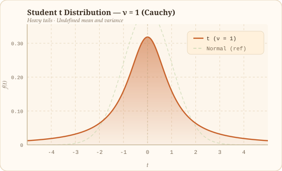
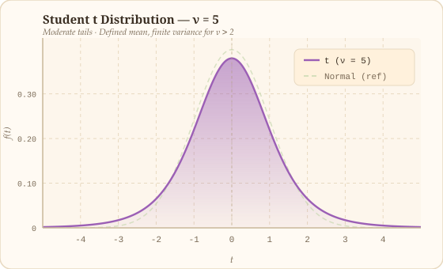
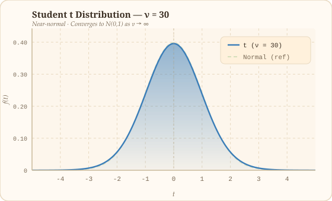
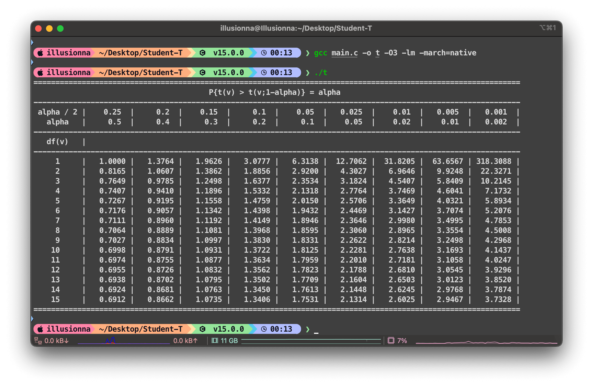

2026-03-15 · 数值分析 · 统计学
正则化不完全 $\beta$ 函数可计算离散 $t$ 分布的累积概率分布函数，从而易得出 $t$ 分布的概率密度函数，最终可 $t$ 分布临界值表，同理可以导出 F 分布临界值表，以及 $\chi^2$ 分布临界值表。
对于实数 $a,b>0$ 有贝塔函数定义：
贝塔函数
\[ \beta(a,b)=\int_{0}^{1}t^{a-1}(1-t)^{b-1}\mathrm{d}t=\displaystyle\dfrac{\Gamma(a)\Gamma(b)}{\Gamma(a+b)} \]Gamma 函数由 Leonhard Euler 于 1730 年“内插阶乘”引入，定义为：
欧拉第二类积分
\[ \Gamma(x)=\int_{0}^{\infty}\mathrm{e}^{-t}t^{x-1}\mathrm{d}t\qquad\operatorname{Re}(x)>0 \]其中 $\operatorname{Re}(x)>0$ 保证积分收敛，被积函数 $\mathrm{e}^{-t}t^{x-1}$ 在 $t\to0^{+}$ 与 $t\to+\infty$ 两端均趋于零。
Weierstrass 无穷乘积是 Gamma 函数的倒数，被定义为：
威尔斯特拉斯乘积
\[ \dfrac{1}{\Gamma(x)}=x\mathrm{e}^{\gamma x}\prod_{n=1}^{\infty}\left(1+\dfrac{x}{n}\right)\mathrm{e}^{-x/n} \]其中 $\gamma\approx0.5772$ 为 Euler-Mascheroni 常数，由此 $\dfrac{1}{\Gamma(x)}$ 是整函数，$\Gamma(x)$ 在 $x=0,-1,-2,\ldots$ 处有一阶极点，无零点。
分部积分定义：
分部积分
\[ \int u\mathrm{d}v=uv-\int v\mathrm{d}u \] 令： \[ u=t^n\implies\mathrm{d}u=nt^{n-1}\mathrm{d}t\qquad\mathrm{d}v=\mathrm{e}^{-t}\mathrm{d}t\implies v=-\mathrm{e}^{-t} \]洛必达法则有：
极限
\[ \lim_{t\to\infty}\dfrac{-t^n}{\mathrm{e}^t}=\lim_{t\to\infty}\dfrac{-n!\cdot0}{\mathrm{e}^t}=0 \]若 $x\in\mathbb{N}$ 则 Gamma 数列被定义为：
伽马数列递推公式
\[ {\color{red}\Gamma(n+1)}=\int_{0}^{\infty}\mathrm{e}^{-t}t^{n}\mathrm{d}t=\left.\dfrac{-t^n}{\mathrm{e}^t}\right|_{0}^{\infty}+n\int_{0}^{\infty}\mathrm{e}^{-t}t^{n-1}\mathrm{d}t={\color{red}n\Gamma(n)=n!} \]将 $\beta$ 函数的积分上限换成变量 $x$，其中 $0\leqslant x\leqslant 1$，得到不完全贝塔函数：
不完全贝塔函数
\[ \beta(x;a,b)=\int_{0}^{x}t^{a-1}(1-t)^{b-1}\mathrm{d}t \]概率统计中，需保证总概率恒为 1，因此将不完全 $\beta$ 函数除以 $\beta$ 函数进行归一化，其中 $a,b\in\mathbb{N}$，得到正则化不完全 $\beta$ 函数：
正则化不完全贝塔函数
\[ \begin{align*} I(x;a,b)&=\dfrac{\beta(x;a,b)}{\beta(a,b)}=\dfrac{\displaystyle\int_{0}^{x}t^{a-1}(1-t)^{b-1}\mathrm{d}t}{\displaystyle\dfrac{\Gamma(a)\Gamma(b)}{\Gamma(a+b)}} \\[7pt] &=\dfrac{(a+b-1)!}{(a-1)!(b-1)!}\left\{\left.\dfrac{t^a}{a}(1-t)^{b-1}\right|_{0}^{x}-\int_{0}^{x}\dfrac{t^a}{a}\left[-(b-1)(1-t)^{b-2}\right]\mathrm{d}t\right\} \\[7pt] &=\dfrac{(a+b-1)!}{(a-1)!(b-1)!}\left[\dfrac{x^a(1-x)^{b-1}}{a}+\dfrac{b-1}{a}\int_{0}^{x}t^a(1-t)^{b-2}\mathrm{d}t\right] \\[7pt] &=\dfrac{(a+b-1)!}{a!(b-1)!}x^a(1-x)^{b-1}+\dfrac{(a+b-1)!}{a!(b-2)!}\int_{0}^{x}t^a(1-t)^{b-2}\mathrm{d}t \\[7pt] &=\binom{a+b-1}{a}x^a(1-x)^{b-1}+\dfrac{\displaystyle\int_{0}^xt^a(1-t)^{b-2}\mathrm{d}t}{\beta(a+1,b-1)} \\[7pt] &=\binom{a+b-1}{a}x^a(1-x)^{b-1}+\dfrac{\beta(x;a+1,b-1)}{\beta(a+1,b-1)} \\[7pt] &=\binom{a+b-1}{a}x^a(1-x)^{b-1}+I(x;a+1,b-1) \\[7pt] &=\cdots\cdots\cdots\cdots\cdots\cdots\cdots\cdots\qquad{\color{red}\text{Recursion}\to I(x;n,1)=x^n} \\[7pt] &=\sum_{n=a}^{a+b-1}\binom{a+b-1}{n}x^n(1-x)^{a+b-1-n} \\[7pt] &=\sum_{n=a}^{a+b-1}\dfrac{(a+b-1)!}{n!(a+b-1-n)!}x^n(1-x)^{a+b-1-n} \end{align*} \]Gamma 函数增长极快，第一种情况是利用 $\Gamma(x+1)=x\Gamma(x)$ 递推，将伽马变到 $1\sim2$ 范围，但比如 $\Gamma(172)=171!>10^{308}$，即超过 double 双精度浮点数最大范围。第二种是考虑到使用对数压缩范围，这样可以使得计算不超过浮点数范围。
对于正数，使用斯特林近似：
对数伽马的斯特林近似
\[ \ln\Gamma(x)\approx x\ln x-x-\dfrac{1}{2}\ln\left(\dfrac{x}{2\pi}\right) \]对于负数，使用欧拉反射公式：
欧拉反射公式
\[ \Gamma(x)\Gamma(1-x)=\dfrac{\pi}{\sin\left(\pi x\right)} \]根据美国国家标准与技术研究院 NIST 出版的数学函数数字图书库 Digital Library of Mathematical Functions 权威定义，正则化不完全 $\beta$ 函数可以通过以下无限连分数展开进行超高精度逼近：
正则化不完全贝塔函数无穷连分式展开
\[ I(x;a,b)=\dfrac{x^a(1-x)^b}{a\beta(a,b)}\cdot\dfrac{1}{1+\dfrac{d_1}{1+\dfrac{d_2}{1+\dfrac{d_3}{1+\dots}}}} \]偶数项系数序列：
偶数项
\[ d_{2m}=\dfrac{m(b-m)x}{(a+2m-1)(a+2m)} \]奇数项系数序列：
奇数项
\[ d_{2m+1}=-\dfrac{(a+m)(a+b+m)x}{(a+2m)(a+2m+1)} \]连分数收敛条件：
收敛条件
\[ x<\dfrac{a+1}{a+b+2} \]评估点 $x$ 满足此核心不等式时，概率积分的几何权重分布主要集中在评估区间的前半部分，连分数的逼近截断误差呈现出极其优异的指数级衰减。然而，当输入的 $x$ 不满足条件时，连分数分母中的相互抵消效应会严重恶化，导致收敛速度急剧下降，如果强行继续迭代，不仅会消耗大量的 CPU 计算时钟周期，甚至可能由于双精度浮点数 double 类型尾数位 Mantissa 的截断误差累积，导致最终计算彻底发散失效。
为从根本上解决这一计算理论瓶颈，利用正则化不完全 $\beta$ 函数的镜像对称性等价恒等式：
镜像对称性原理
\[ I(x;a,b)=1-I(1-x;b,a) \]任意形状的 $\beta$ 分布曲线，位于左侧尾部的概率累积面积，严格等价于其形状参数相互对调后，位于右侧相应镜像区间的尾部概率面积之补集。
实际编程算法实现层面，当检测到输入变量 $x$ 超出收敛域时，程序会立刻自动触发参数翻转机制，将目标计算任务转换为计算 $I(1-x;b,a)$，由于 $x$ 与 $1-x$ 处关于区间中点的互补状态，这种基于镜像对称性的动态条件分支策略，达成一种优雅的自适应保护机制，确保无论外部调用栈传入的输入参数如何畸形或极端，底层最深处的连分数引擎始终且必须运行在性能最佳的指数级收敛区间内。
Lentz 算法是一种高效且数值稳定计算连分数的方法，由 William J. Lentz 在 1976 年，用于计算贝塞尔函数等特殊函数的值，但后来被广泛用于各种无穷连分数的数值计算中，Lentz 算法求解的目标是形如：
连分式
\[ F=b_0+\dfrac{a_1}{b_1+\dfrac{a_2}{b_2+\dfrac{a_3}{b_3+\dfrac{a_4}{b_4+\dots}}}} \]连分数直接从上到下计算容易出现除零或者数值溢出问题，Lentz 算法通过迭代更新避免了这些问题。Lentz 算法核心思想：
计算正则化不完全 $\beta$ 函数，其中 $b_0=b_1=b_2=\cdots=1$，而 $a_i$ 严格对应 $d_i$，并且设置 Lentz 初始值：
Lentz 迭代算法
\[ \begin{align*} C_0&=F_0 \\[7pt] D_0&=0 \\[7pt] F_0&=b_0 \\[7pt] C_i&=1+\dfrac{a_i}{C_{i-1}} \\[7pt] D_i&=\dfrac{1}{1+a_iD_{i-1}} \\[7pt] F_i&=F_{i-1}C_iD_i \\[7pt] \mid C_iD_i-1\mid&<\varepsilon\implies F_i \end{align*} \]记 $A=\displaystyle\int_{-\infty}^{\infty}\mathrm{e}^{\displaystyle-x^2}\mathrm{d}x$，则：
令：
根据雅可比行列式可得：
则：
记 $u=r^2$ 则微分：
则：
根据高斯积分，易算得有如下推论：
Student $t$ 的 PDF 概率密度函数：
Student t 分布概率密度函数
\[ f(x;\nu)=\dfrac{\Gamma\left(\dfrac{\nu+1}{2}\right)}{\sqrt{\nu\pi}\Gamma\left(\dfrac{\nu}{2}\right)}\left(1+\dfrac{x^2}{\nu}\right)^{-\dfrac{\nu+1}{2}} \]由于：
则有：
则有累积概率分布函数：
令 $u=\dfrac{\nu}{\nu+x^2}$，则有：
当 $x\to\infty$ 时，$u\to0$，当 $x\to t$ 时，$u\to\dfrac{\nu}{\nu+t^2}$，记 $s=\dfrac{\nu}{\nu+t^2}$，则有：
因此 Student $t$ 分布的 CDF 结果如下：
累积概率分布函数与正则化不完全贝塔函数关系
\[ F(t;\nu)=\Pr(X\leqslant t)=\begin{cases} 1-\dfrac{1}{2}I\left(\dfrac{\nu}{\nu+t^2};\dfrac{\nu}{2},\dfrac{1}{2}\right)\qquad t>0 \\[10pt] \dfrac{1}{2}I\left(\dfrac{\nu}{\nu+t^2};\dfrac{\nu}{2},\dfrac{1}{2}\right)\qquad\ \ \ \quad t\leqslant0 \end{cases} \]
自由度 ν = 1

自由度 ν = 5

自由度 ν = 30
为了消除编程中 if-else 分支判断正负，加快 CPU 计算，我们把 $t\in(-\infty,+\infty)$ 映射到正则化不完全 $\beta$ 函数所需的 $x\in[0,1]$ 区间，刚才是令 $s=\dfrac{\nu}{\nu+t^2}$，但代码里必须进行 if t > 0 和 if t <= 0 分段处理，并且参数是固定的 $\dfrac{\nu}{2}$ 和 $\dfrac{1}{2}$，现在用另一种映射变量：
这是一种单调递增的映射，有这些特点：
它把整个实数轴平滑地拉伸并压缩到了 $[0,1]$ 区间内，不需要任何 if-else 分支来判断正负。
当 Student $t$ 分布以 $t=0$ 为中心对称时，让正则化不完全 $\beta$ 函数的两个参数都为 $\dfrac{\nu}{2}$，则利用贝塔函数对称性恒等式：
正则化不完全贝塔函数对称恒等式
\[ I\left(z;\dfrac{\nu}{2},\dfrac{\nu}{2}\right)=\begin{cases} 1-\dfrac{1}{2}I\left[1-(1-2z)^2;\dfrac{\nu}{2},\dfrac{1}{2}\right]\qquad z>0.5 \\[10pt] \dfrac{1}{2}I\left[1-(1-2z)^2;\dfrac{\nu}{2},\dfrac{1}{2}\right]\qquad\ \ \ \quad z\leqslant0.5 \end{cases} \]若将 $z=\dfrac{1}{2}\left(1+\dfrac{t}{\sqrt{t^2+\nu}}\right)$ 代入 $1-(1-2z)^2$ 可得：
这与上述 Student $t$ 分布 CDF 在数学推导上是等价的。
现在有了第 1～8 部分的数学理论，我们容易迭代求得 $t$ 分布的 CDF 累积概率分布，再根据定义可知，$t$ 分布的 PDF 概率密度函数是 CDF 的导数，所以：
导数定义
\[ f(x;\nu)=\lim_{h\to0}\dfrac{F(x+h;\nu)-F(x;\nu)}{h} \]为了提高逼近的精度，工程上通常不采用单边差分，而是采用中心差分：
导数中心差分
\[ \text{PDF}(x;\nu)=f(x;\nu)=\lim_{h\to0}\dfrac{\text{CDF}(x+h;\nu)-\text{CDF}(x-h;\nu)}{2h} \]你对比一下，离谱吧，只需要调用两次 incbeta 正则化不完全贝塔函数，再将 $h$ 步长设置极小如 1e-7 浮点数，完全不需要用 $\Gamma$ 函数和复杂的代数解析式，就能得到精确的 PDF 值！
Student t 分布 PDF 概率密度函数
\[ f(x;\nu)=\dfrac{\Gamma\left(\dfrac{\nu+1}{2}\right)}{\sqrt{\nu\pi}\Gamma\left(\dfrac{\nu}{2}\right)}\left(1+\dfrac{x^2}{\nu}\right)^{-\dfrac{\nu+1}{2}} \]此时，为了构建 $t$ 分布临界值表，我们只需要澄清一个道理：由显著性水平 $\alpha$ 可以得到目标累积概率 $p$，除此之外，咱们还有自由度 $\nu$，如何求未知数 $x$？即求解非线性方程：
目标方程
\[ g(x)=\text{CDF}(x;\nu)-p=0 \]考虑 Newton-Raphson 迭代算法：
牛顿迭代
\[ x_{n+1}=x_n-\dfrac{g(x_n)}{g'(x_n)}=x_n-\dfrac{\text{CDF}(x_n;\nu)-p}{\text{PDF}(x_n;\nu)} \]最后编译代码执行程序得到 Student $t$ 分布临界置信水平表：

C 语言代码运行结果
源码如下：
#include <math.h>
#include <stdio.h>
double incbeta(double x, double a, double b) {
static const double epsilon = 1.0e-30;
static const double condition = 1.0e-12;
if (x < 0.0 || x > 1.0) return INFINITY;
if (x > (a + 1.0) / (a + b + 2.0)) return 1.0 - incbeta(1.0 - x, b, a);
double c = 1.0;
double d = 0.0;
double f = 1.0;
const double lbeta_ab = lgamma(a) + lgamma(b) - lgamma(a + b);
const double front = exp(a * log(x) + b * log(1.0 - x) - lbeta_ab) / a;
for (int i = 0; i <= 200; ++i) {
int m = i / 2;
double numerator;
if (i == 0) numerator = 1.0;
else if (i % 2 == 0) numerator = (m * (b - m) * x) / ((a + 2.0 * m - 1.0) * (a + 2.0 * m));
else numerator = - ((a + m) * (a + b + m) * x) / ((a + 2.0 * m) * (a + 2.0 * m + 1));
d = 1.0 + numerator * d;
if (fabs(d) < epsilon) d = epsilon;
d = 1.0 / d;
c = 1.0 + numerator / c;
if (fabs(c) < epsilon) c = epsilon;
double cd = c * d;
f = f * cd;
if (fabs(cd - 1.0) < condition) return front * (f - 1.0);
}
return INFINITY;
}
double cdf_student_t(double t, double df) {
if (df <= 0.0) return NAN;
if (t == 0.0) return 0.5;
double cache = sqrt(t * t + df);
return incbeta((t + cache) / (2.0 * cache), df / 2.0, df / 2.0);
}
double pdf_student_t(double t, double df) {
double h = 1e-7;
double cdf_plus = cdf_student_t(t + h, df);
double cdf_minus = cdf_student_t(t - h, df);
return (cdf_plus - cdf_minus) / (2.0 * h);
}
double newton_raphson_t(double p, double df) {
if (p <= 0.0) return -INFINITY;
if (p >= 1.0) return INFINITY;
if (p == 0.5) return 0.0;
double x = 0.0;
int epochs = 50;
double epsilon = 1e-12;
for (int n = 0; n < epochs; n++) {
double g = cdf_student_t(x, df) - p;
if (fabs(g) < epsilon) break;
double g_derivative = pdf_student_t(x, df);
if (g_derivative == 0.0) break;
x = x - g / g_derivative;
}
return x;
}
void build_student_t_critical_table() {
double single_alpha[] = {0.25, 0.2, 0.15, 0.1, 0.05, 0.025, 0.01, 0.005, 0.001};
double size = sizeof(single_alpha) / sizeof(single_alpha[0]);
printf("===============================================================================================================\n");
printf(" P{t(v) > t(v;1-alpha)} = alpha\n");
printf("---------------------------------------------------------------------------------------------------------------\n");
printf(" alpha / 2 |");
for (int i = 0; i < size; i++) printf(" %7g |", single_alpha[i]);
printf("\n");
printf(" alpha |");
for (int i = 0; i < size; i++) printf(" %7g |", single_alpha[i] * 2.0);
printf("\n");
printf("---------------------------------------------------------------------------------------------------------------\n");
printf(" df(v) |\n");
printf("---------------------------------------------------------------------------------------------------------------\n");
for (double v = 1; v < 16; v++) {
printf(" %2.0lf |", v);
for (int i = 0; i < size; i++) {
double p = 1.0 - single_alpha[i];
double t = newton_raphson_t(p, v);
printf(" %8.4lf |", t);
}
printf("\n");
}
printf("===============================================================================================================\n");
}
int main(int argc, char *argv[], char *envs[]) {
build_student_t_critical_table();
return 0;
}
F 分布的累积分布函数：
F 分布 CDF
\[ \text{CDF}(F;\nu_1,\nu_2)=I\left(x;\dfrac{\nu_1}{2},\dfrac{\nu_2}{2}\right) \]其中：
同理类推 Student $t$ 分布计算临界值方法，可以快速求出 F 分布的临界值表。
double cdf_f(double F, double df1, double df2) {
if (F <= 0) return 0.0;
double x = (df1 * F) / (df1 * F + df2);
return incbeta(x, df1 / 2.0, df2 / 2.0);
}
double pdf_f(double F, double df1, double df2) {
double h = 1e-7;
double cdf_minus = (F - h < 0.0) ? 0.0 : cdf_f(F - h, df1, df2);
return (cdf_f(F + h, df1, df2) - cdf_minus) / (2.0 * h);
}
double newton_raphson_f(double p, double df1, double df2) {
if (p <= 0.0) return 0.0;
if (p >= 1.0) return INFINITY;
double x = 1.0;
int epochs = 50;
double epsilon = 1e-12;
for (int n = 0; n < epochs; n++) {
double g = cdf_f(x, df1, df2) - p;
if (fabs(g) < epsilon) break;
double g_derivative = pdf_f(x, df1, df2);
if (g_derivative == 0.0) break;
x = x - g / g_derivative;
if (x <= 0.0) x = 0.0000001;
}
return x;
}
卡方 $\chi^2$ 分布衡量是多个标准正态分布的平方和，概率密度函数定义为：
卡方分布 PDF
\[ f(x;\nu)=\dfrac{x^{\tfrac{\nu}{2}-1}\mathrm{e}^{-\tfrac{x}{2}}}{2^{\tfrac{\nu}{2}}\Gamma\left(\dfrac{\nu}{2}\right)} \]当 F 分布自由度 $\nu_2\to\infty$ 时，可得 $\chi^2$ 关系恒等式：
卡方分布 CDF
\[ \chi^2(\nu_1)=\lim_{\nu_2\to\infty}\left[\nu_1\cdot F\left(\nu_1,\nu_2\right)\right] \]
double cdf_approx_chi_square(double p, double df) {
double infinity_df2 = 1e6;
return df * newton_raphson_f(p, df, infinity_df2);
}
测试结果：
int main(int argc, char *argv[], char *envs[]) {
double alpha = 0.01;
double p = 1.0 - alpha;
double df1 = 5;
double df2 = 10;
double df = 7;
printf("alpha = %.3lf, df1 = %.0f, df2 = %.0f, F = %.4lf\n", alpha, df1, df2, newton_raphson_f(p, df1, df2));
printf("alpha = %.3lf, df = %.0f, chi^2 = %.4lf\n", alpha, df, cdf_approx_chi_square(p, df));
return 0;
}
alpha = 0.010, df1 = 5, df2 = 10, F = 5.6363
alpha = 0.010, df = 7, chi^2 = 18.4754